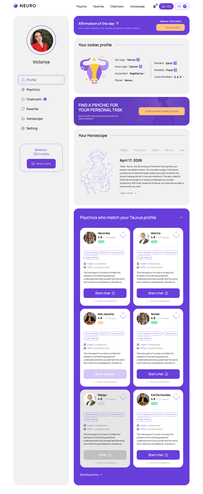
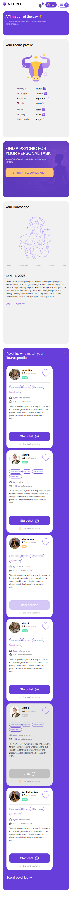

Обзор профиля
account/profile.html
Показать собственный профиль, баланс, персональный контент и подборки.
| Когда открывается | Меню Profile / вход |
|---|---|
| Данные | Имя; фото; астрологические данные; баланс; опубликованный контент; эксперты. |
| Сценарий | Refill → пополнение; See all → каталог; карточка → эксперт; редактирование → настройки. |
| Переходы | Каталог кабинета · Астрологический профиль · Пополнение перед началом |
Общая и предметная логика. Снимки и подписи элементов — исходная редакция макета; поздние уточнения ТЗ имеют приоритет в своей области. Это не проверка текущего сайта.
Сопоставление с AskNebula
Существующие наблюдения 07–09.10.2026, без повторной проверки в этой передаче.
Видны обзор, пополнение, zodiac summary, гороскоп и подборка экспертов; See all psychics открыл каталог. Личные значения не перенесены. Zodiac-блок не подтверждает отдельные SC-025/SC-024, расчёты, редактирование или оплату.
Состояние 1280 · 1280 × 3109


Элементы и ожидаемые действия
| Элемент | Название в макете | Действие | Ожидаемый результат |
|---|---|---|---|
| E001 Виден | Neuro profile | Открыть адрес из исходника: profile.html. | Сохранить авторизацию и переданный контекст. Backend-only маршрут связывает Игорь; открытие не выполняет денежное действие. |
| E002 Виден | Psychic | Открыть адрес из исходника: psychics.html. | Сохранить авторизацию и переданный контекст. Backend-only маршрут связывает Игорь; открытие не выполняет денежное действие. |
| E003 Виден | Favorite | Открыть адрес из исходника: favorites.html. | Сохранить авторизацию и переданный контекст. Backend-only маршрут связывает Игорь; открытие не выполняет денежное действие. |
| E004 Виден | Chatroom | Открыть адрес из исходника: chatroom.html. | Сохранить авторизацию и переданный контекст. Backend-only маршрут связывает Игорь; открытие не выполняет денежное действие. |
| E005 Виден | Horoscope | Открыть адрес из исходника: horoscope.html. | Сохранить авторизацию и переданный контекст. Backend-only маршрут связывает Игорь; открытие не выполняет денежное действие. |
| E006 Виден | Notifications, 2 unread notifications | Открыть адрес из исходника: notifications.html. | Сохранить авторизацию и переданный контекст. Backend-only маршрут связывает Игорь; открытие не выполняет денежное действие. |
| E007 Виден | Profile | Открыть адрес из исходника: profile.html. | Сохранить авторизацию и переданный контекст. Backend-only маршрут связывает Игорь; открытие не выполняет денежное действие. |
| E008 Виден | Psychics | Открыть адрес из исходника: psychics.html. | Сохранить авторизацию и переданный контекст. Backend-only маршрут связывает Игорь; открытие не выполняет денежное действие. |
| E009 Виден | Chatroom 3 | Открыть адрес из исходника: chatroom.html. | Сохранить авторизацию и переданный контекст. Backend-only маршрут связывает Игорь; открытие не выполняет денежное действие. |
| E010 Виден | Favorite | Открыть адрес из исходника: favorites.html. | Сохранить авторизацию и переданный контекст. Backend-only маршрут связывает Игорь; открытие не выполняет денежное действие. |
| E011 Виден | Horoscope | Открыть адрес из исходника: horoscope.html. | Сохранить авторизацию и переданный контекст. Backend-only маршрут связывает Игорь; открытие не выполняет денежное действие. |
| E012 Виден | Setting | Открыть адрес из исходника: settings.html. | Сохранить авторизацию и переданный контекст. Backend-only маршрут связывает Игорь; открытие не выполняет денежное действие. |
| E013 Виден | START MY FREE CONSULTATION | Открыть вопрос/постоянный диалог с явно выбранным экспертом; при необходимости сначала вход. | Бесплатный диалог и welcome bonus различаются; нет платного Start от одного нажатия. |
| E014 Виден | Start chat | Продолжить сценарий «Обзор профиля»: Refill → пополнение; See all → каталог; карточка → эксперт; редактирование → настройки. | Сохраняются expertId/dialogId; вопрос, согласие, funding и operator Start не объединяются. Нажатие само не запускает платное время. |
| E015 Виден | Start chat | Продолжить сценарий «Обзор профиля»: Refill → пополнение; See all → каталог; карточка → эксперт; редактирование → настройки. | Сохраняются expertId/dialogId; вопрос, согласие, funding и operator Start не объединяются. Нажатие само не запускает платное время. |
| E016 Виден | Start chat | Продолжить сценарий «Обзор профиля»: Refill → пополнение; See all → каталог; карточка → эксперт; редактирование → настройки. | Сохраняются expertId/dialogId; вопрос, согласие, funding и operator Start не объединяются. Нажатие само не запускает платное время. |
| E017 Виден | Start chat | Продолжить сценарий «Обзор профиля»: Refill → пополнение; See all → каталог; карточка → эксперт; редактирование → настройки. | Сохраняются expertId/dialogId; вопрос, согласие, funding и operator Start не объединяются. Нажатие само не запускает платное время. |
Состояние 390 · 390 × 4843


Элементы и ожидаемые действия
| Элемент | Название в макете | Действие | Ожидаемый результат |
|---|---|---|---|
| E001 Виден | Neuro profile | Открыть адрес из исходника: profile.html. | Сохранить авторизацию и переданный контекст. Backend-only маршрут связывает Игорь; открытие не выполняет денежное действие. |
| E002 Скрыт в этом состоянии | Psychic | Открыть адрес из исходника: psychics.html. | Сохранить авторизацию и переданный контекст. Backend-only маршрут связывает Игорь; открытие не выполняет денежное действие. |
| E003 Скрыт в этом состоянии | Favorite | Открыть адрес из исходника: favorites.html. | Сохранить авторизацию и переданный контекст. Backend-only маршрут связывает Игорь; открытие не выполняет денежное действие. |
| E004 Скрыт в этом состоянии | Chatroom | Открыть адрес из исходника: chatroom.html. | Сохранить авторизацию и переданный контекст. Backend-only маршрут связывает Игорь; открытие не выполняет денежное действие. |
| E005 Скрыт в этом состоянии | Horoscope | Открыть адрес из исходника: horoscope.html. | Сохранить авторизацию и переданный контекст. Backend-only маршрут связывает Игорь; открытие не выполняет денежное действие. |
| E006 Виден | Notifications, 2 unread notifications | Открыть адрес из исходника: notifications.html. | Сохранить авторизацию и переданный контекст. Backend-only маршрут связывает Игорь; открытие не выполняет денежное действие. |
| E007 Скрыт в этом состоянии | Profile | Открыть адрес из исходника: profile.html. | Сохранить авторизацию и переданный контекст. Backend-only маршрут связывает Игорь; открытие не выполняет денежное действие. |
| E008 Скрыт в этом состоянии | Psychics | Открыть адрес из исходника: psychics.html. | Сохранить авторизацию и переданный контекст. Backend-only маршрут связывает Игорь; открытие не выполняет денежное действие. |
| E009 Скрыт в этом состоянии | Chatroom 3 | Открыть адрес из исходника: chatroom.html. | Сохранить авторизацию и переданный контекст. Backend-only маршрут связывает Игорь; открытие не выполняет денежное действие. |
| E010 Скрыт в этом состоянии | Favorite | Открыть адрес из исходника: favorites.html. | Сохранить авторизацию и переданный контекст. Backend-only маршрут связывает Игорь; открытие не выполняет денежное действие. |
| E011 Скрыт в этом состоянии | Horoscope | Открыть адрес из исходника: horoscope.html. | Сохранить авторизацию и переданный контекст. Backend-only маршрут связывает Игорь; открытие не выполняет денежное действие. |
| E012 Скрыт в этом состоянии | Setting | Открыть адрес из исходника: settings.html. | Сохранить авторизацию и переданный контекст. Backend-only маршрут связывает Игорь; открытие не выполняет денежное действие. |
| E013 Виден | START MY FREE CONSULTATION | Открыть вопрос/постоянный диалог с явно выбранным экспертом; при необходимости сначала вход. | Бесплатный диалог и welcome bonus различаются; нет платного Start от одного нажатия. |
| E014 Виден | Start chat | Продолжить сценарий «Обзор профиля»: Refill → пополнение; See all → каталог; карточка → эксперт; редактирование → настройки. | Сохраняются expertId/dialogId; вопрос, согласие, funding и operator Start не объединяются. Нажатие само не запускает платное время. |
| E015 Виден | Start chat | Продолжить сценарий «Обзор профиля»: Refill → пополнение; See all → каталог; карточка → эксперт; редактирование → настройки. | Сохраняются expertId/dialogId; вопрос, согласие, funding и operator Start не объединяются. Нажатие само не запускает платное время. |
| E016 Виден | Start chat | Продолжить сценарий «Обзор профиля»: Refill → пополнение; See all → каталог; карточка → эксперт; редактирование → настройки. | Сохраняются expertId/dialogId; вопрос, согласие, funding и operator Start не объединяются. Нажатие само не запускает платное время. |
| E017 Виден | Start chat | Продолжить сценарий «Обзор профиля»: Refill → пополнение; See all → каталог; карточка → эксперт; редактирование → настройки. | Сохраняются expertId/dialogId; вопрос, согласие, funding и operator Start не объединяются. Нажатие само не запускает платное время. |